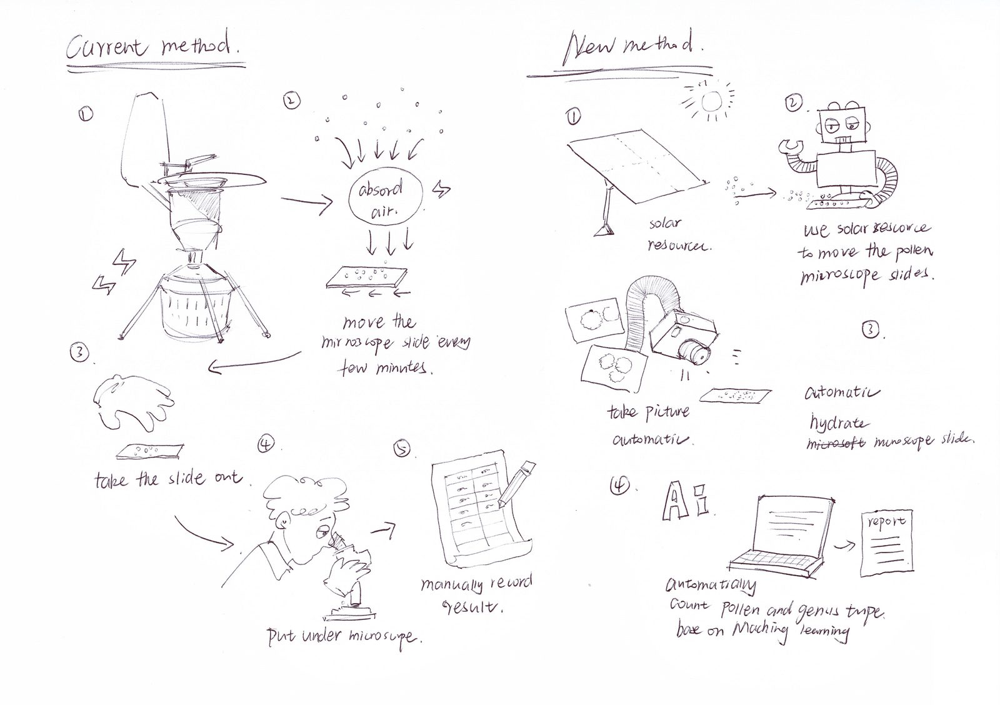
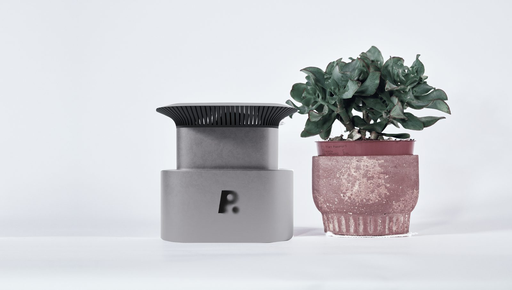
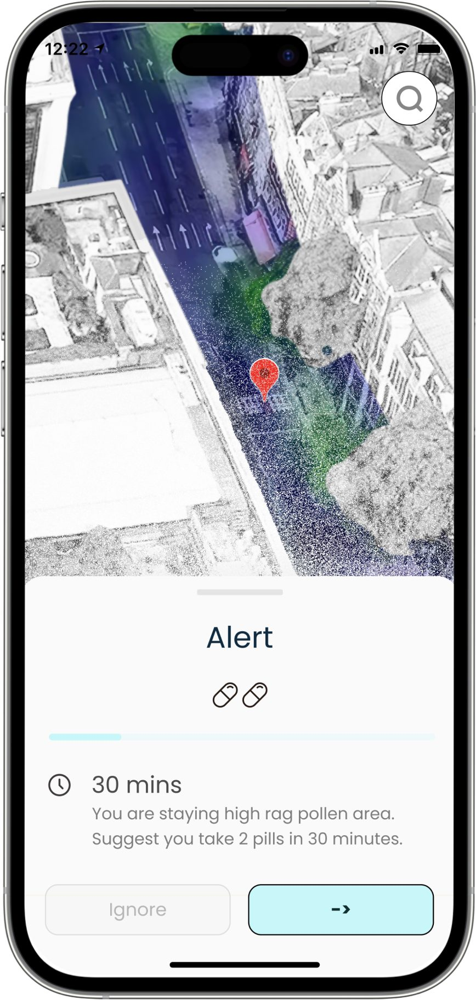
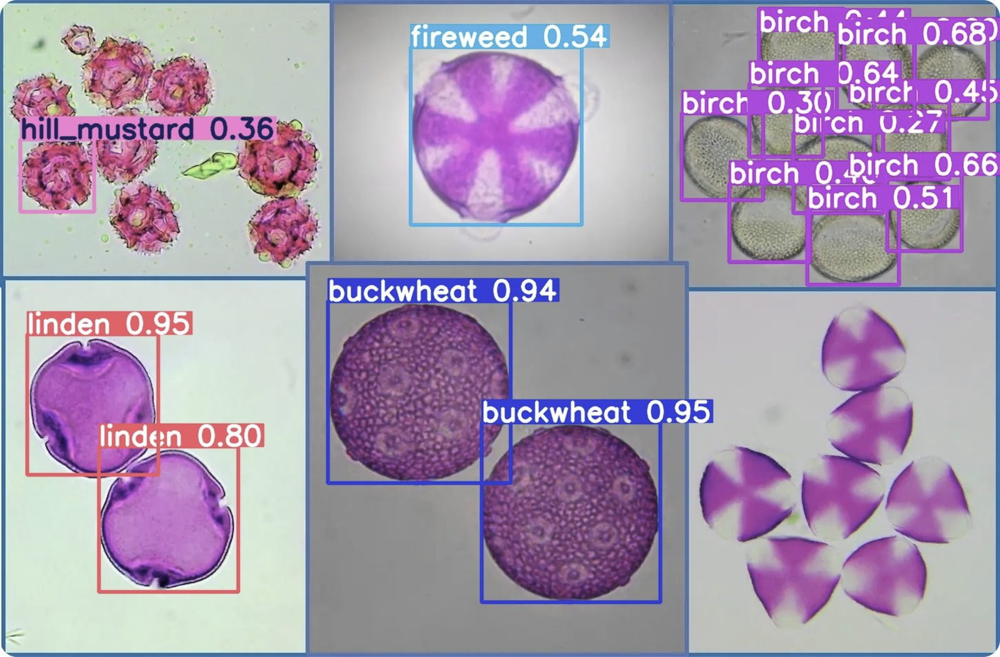
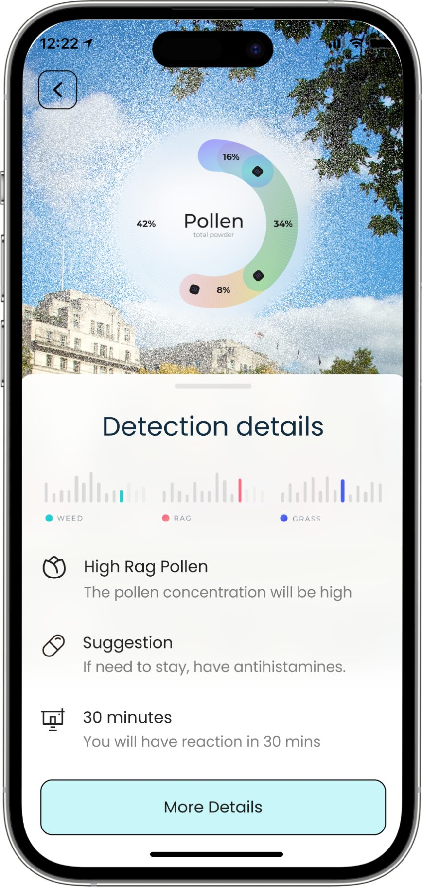
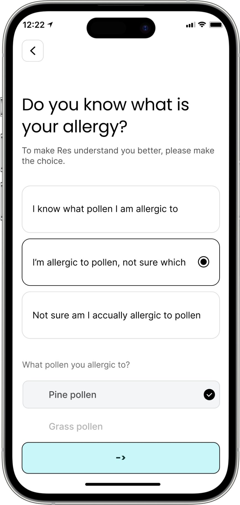

Allergy prevention wherever you live and play. We didn't stop at the sensor — we designed for behaviour change.
RES combines precise pollen detection with actionable insight, empowering people to breathe easier and live better. Pollen allergies affect one in two people worldwide — but in the whole of London there is only one robust pollen detection machine.
We interviewed over 20 allergy sufferers, ran workshops with 10 users, and consulted several professors and industry experts on current allergy-management challenges. From those conversations, one frustration stood out: the lack of personalised allergy-prevention tools.
People want effective, data-driven ways to manage their symptoms — but with minimal manual intervention. Everyone has their own way of mitigating symptoms, so we designed the app experience to work with that, refined further by feedback from pollen and allergy experts.

Today's pollen-measurement system still carries last century's design, with real drawbacks:
"Current methods of pollen allergy avoidance are inadequate — almost any amount of pollen can be an allergic trigger. So what if pollen forecasts could be designed to be more localised and effective for avoidance and mitigation?"
We looked at allergies from three angles at once: clinically, avoidance is the best treatment; technically, sampling pollen with sufficient accuracy is critical; and from a patient's view, knowing when it's safest to travel matters as much as the forecast itself.
Collecting data from multiple distributed sensors removes location bias, widening the reach of pollen-detection data and improving our collective understanding of what's in the air.

Shows people how to avoid pollen or mitigate their allergies with more bespoke antihistamine dosages — multiplying the sensor's effective reach, not just reporting its readings.

AI and API data enable swift, accurate detection — enhancing immediacy and precision while the distributed sensor network keeps removing location bias.

A simulated RES pollen map over a few hours — interact with gestures and explore hour by hour.

Allergy details — everyone can see system info and self-report at any time, becoming part of the overall system service. Allergy forecast — predicts in real time when and where a reaction is likely, telling users when to take medicine and at what dosage the first time they're exposed.
